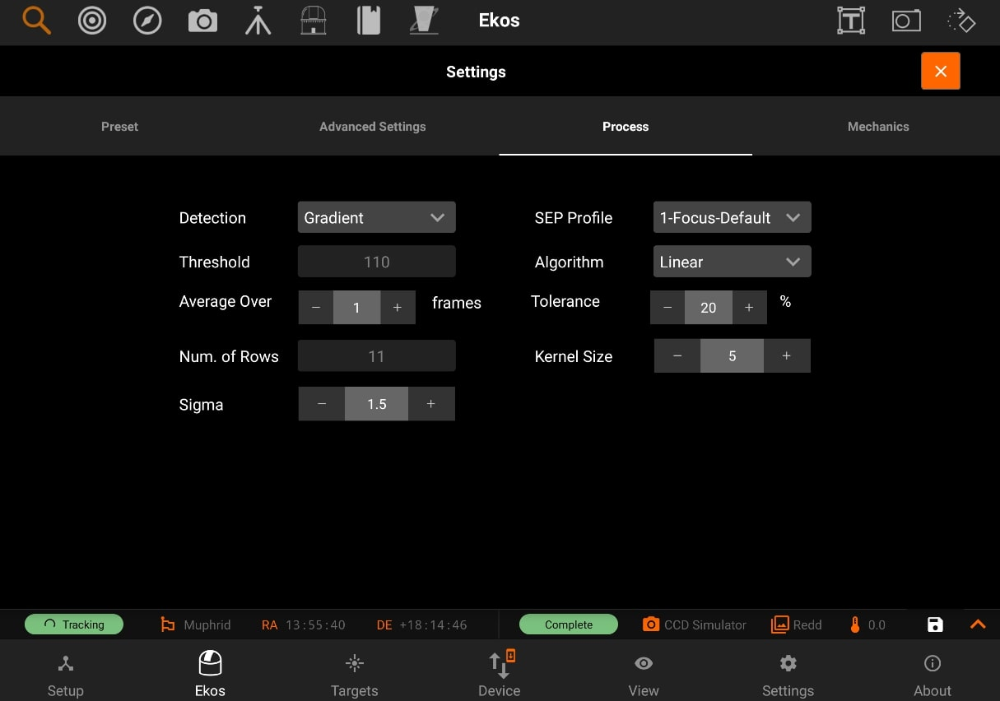

Process
Process

The Process page has the following options:
- Detection: Select star detection algorithm. Each algorithm have its strengths and weaknesses. It is recommended to keep the default value unless it fails to properly detect stars.
- SEP: Source Extractor and Photometry, an efficient source detection method based on Source Extractor (Bertin and Arnouts 1996; Bertin 2016). See SEP: Source Extractor as a library in the Journal of Open Source Software.
- Centroid: a source detection based on estimating star mass around signal peaks.
- Gradient: a single source detection based on the Sobel filter. Initial or full-field analysis will use SEP instead of this method.
- Threshold: a single source detection based on pixel values. Initial or full-field analysis will use SEP instead of this method.
- Bahtinov: This is useful for users who do not have a motorized focuser and prefer to focus manually with the aid of a Bahtinov Mask. After capturing an image in the focus module with the Bahtinov mask algorithm selected, Ekos would analyze the images and stars within it. If Ekos recognizes the Bahtinov star pattern, it will draw lines over the star pattern in circles on the center and on an offset to indicate the focus.
- Threshold: Threshold percentage value is used for star detection using the Threshold detection algorithm. Increase to restrict the centroid to bright cores. Decrease to enclose fuzzy stars.
- Effect: Apply filter to image after capture to enhance it for preview purposes. It is highly advisable to turn off any effects during the focusing process as it may interfere with HFR calculations.
- Kernel size: This is the gaussian blur kernel size. Used for blurring the image before for instance the Bahtinov edge detection.
- Sigma: This is the gaussian blur sigma value. Used for blurring the image before for instance the Bahtinov edge detection.
- Algorithm: Select the autofocus process algorithm:
- Iterative: Moves focuser by discreet steps initially decided by the step size. Once a curve slope is calculated, further step sizes are calculated to reach optimal solution. The algorithm stops when the measured HFR is within percentage tolerance of the minimum HFR recorded in the procedure.
- Polynomial: Starts with iterative method. Upon crossing to the other side of the V-Curve, polynomial fitting coefficients along with possible minimum solution are calculated. This algorithm can be faster than purely iterative approach given a good data set.
- Linear: Samples focus inward in a regular fashion, using 2 passes. The algorithm can be slow, but it is more resilient to backlash. Start with the focuser positioned near good focus. Set Initial Step Size and Max Travel for the desired sampling interval and range around start focus position. Tolerance should be around 5%.
- Tolerance: The tolerance percentage values decides when the autofocus process stops in the Iterative algorithm. During the autofocus process, HFR values are recorded, and once the focuser is close to optimal position, it starts measuring HFRs against the minimum recorded HFR in the sessions and stops whenever a measured HFR value is within % difference of the minimum recorded HFR. Decrease value to narrow optimal focus point solution radius. Increase to expand dsolution radius.
|
Caution |
|
|
|
Setting the value too low might result in repetitive loop and would most likely result in a failed autofocus process. |
- Average over: Sets the number of frames to capture in order to average the HFR value at the current focuser position.
- Num. of rows: The number of rows set in this field will be combined in the Bahtinov max average calculation. Changing this value might help to match the Bahtinov lines on the star pattern more accurately.